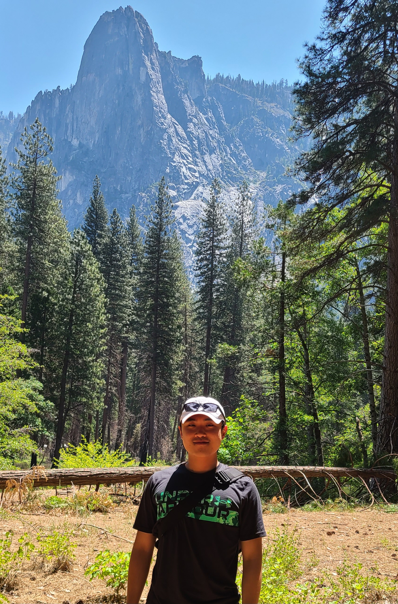

Data Engineer
"Jarvis, sometimes you gotta run before you can walk." - Tony Stark
I am a Data Engineer who thrives on transforming chaos into clean, scalable infrastructure. Whether architecting real-time pipelines or optimizing distributed databases, I treat data engineering as the puzzle. For me, the enjoyment lies in building efficient, reliable systems that solve complex problems.
Off the screen, I believe a grounded mind drives the sharpest code. I recharge by stepping out into nature, riding horses, and line dancing, hobbies that demand the exact same rhythm, adaptability, and calm under pressure as a tough debugging session. And when a major pipeline finally deploys, my favorite way to celebrate is with a perfectly cooked steak and sweet ice cream.

Data with Python March 2026 - Present
Machine Learning Lab, Kangwon National Univ. Jun 2021 - Aug 2021
Forestry & SW Engineering Convergence Unit Jul 2020 - Aug 2021
Python, GCP (Pub/Sub, Compute Engine), PostgreSQL Spring 2026
Apache Kafka, Distributed Systems Fall 2025
Python ETL, SQLite, SQL Fall 2025
Pandas, Streamlit, Python Fall 2025